Chocolate Chip Skillet Cookie served with Ice Cream

This recipe is a mashup of my raw Chocolate Chip Cookie with Ice Cream and the Raw Chocolate Ganache! You can use your favorite ice cream for this dessert. A nice vanilla, such as my Creamy Vanilla Bean Frozen Custard or as shown in the photos, the Raw-E-O Cookie Ice Cream.
Cookie on cookie!! The Raw-E-O Cookie Ice Cream has several steps, but you will have left over to eat as yet another dessert. You can always simplify this ice cream recipe and not make the cookies that go inside of it. Since this is recipe mashup, I am providing links that will take you to the full recipes for each component that I used. This mashup is just to inspire you to think outside the cookie and inside the skillet!
To start off, you will need to make some Raw Chocolate Chip Cookie Dough…

Then whip up some Raw-E-O Cookie Ice Cream or your favorite ice cream.

Don’t forget the Chocolate Ganache Frosting!
Make your own raw chocolate chips!

Let’s mash up these recipes:
- Once you have the dough made, press into your skillet pan. You can use small or large pans. A large one would be fun for the family to sit around and have everyone dig in. Place in the dehydrator at 115 degrees for 4-6 hours or until warm to your liking. You can leave the dough in the pan or remove it for this process. I left mine in.
- Once warm, remove the pan and add a dollop of ice cream in the center.
- Drizzle with chocolate ganache and partake in a piece of heaven!
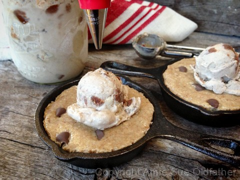
Let the heavenly, ganache gods flow from the skies above…
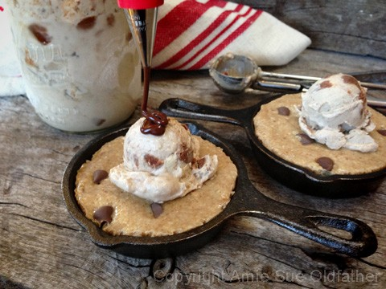
Looks around, “Well, darn, I better taste test this to make sure it is edible!”
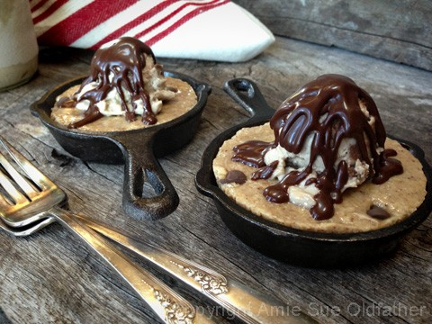
Just one bite… that is all that I will need…
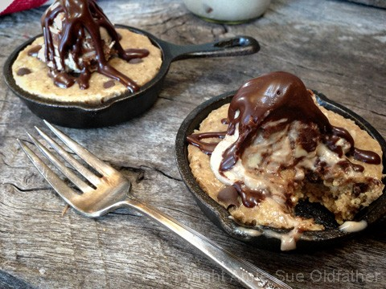
OK, maybe two… but that is IT!
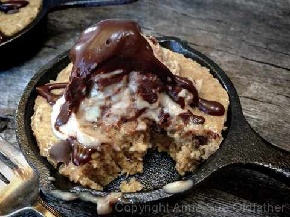
Darn, that is tasting amazing, it tastes like…like… hmm, just one more bite…
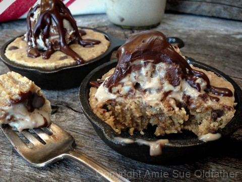
I might as well take one more bite, leaving exactly half, so it looks “cleaner.”
Yea, yea, that’s the ticket! “Cleaner.”
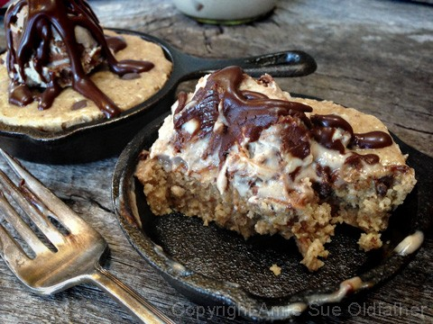
Oops, let me even it out just a tad more….
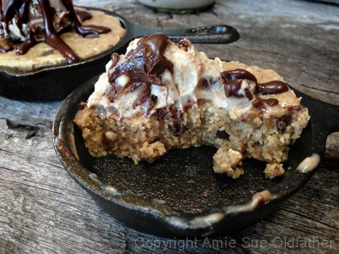
Geese, at this point, I might as well finish it off… “all or noffin?”
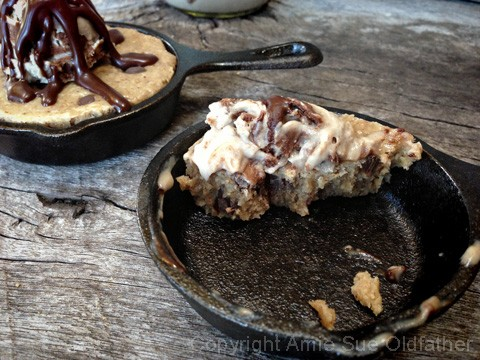
My mama said that I should always clean my…skillet. :)
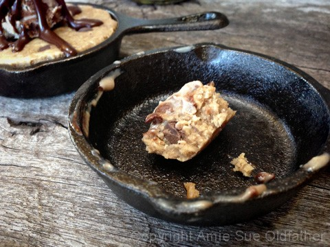
That confirms our taste test today… I need a tall glass of almond milk and a nap!
Thank goodness, there is one left for Bob. :)
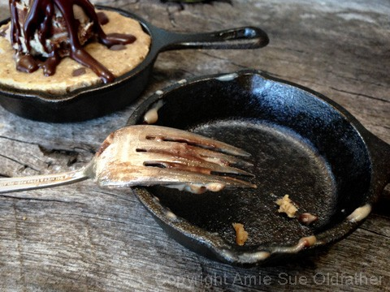
© AmieSue.com